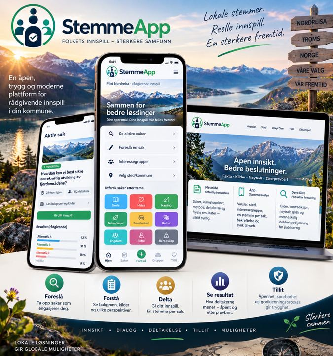
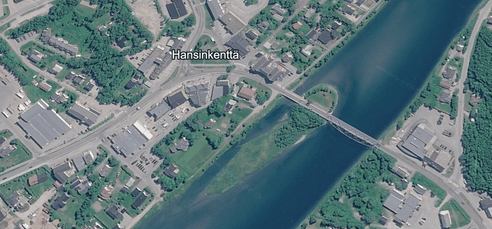

Nettsiden
Åpenhet
Her kan alle følge saken, lese spørsmålet og svaralternativene, se kunnskapsgrunnlaget og senere kontrollere det publiserte resultatet.
StemmeApp er et verktøy for rådgivende innbyggerdeltakelse. Før du logger inn skal du kunne se hva saken gjelder, det eksakte spørsmålet, alle svaralternativene, relevante kilder og hvordan resultatet skal behandles. Første pilotområde er Nordreisa.
Viktig: StemmeApp er ikke et offentlig valgsystem og erstatter ikke kommune-, fylkes- eller stortingsvalg. Resultatene er rådgivende innspill.
Du trenger ikke logge inn for å forstå hva du blir bedt om å ta stilling til.
For hver aktiv sak viser vi offentlig:
det eksakte spørsmålet · alle svaralternativene · kommune/område · status · frist · Deep Dive · kilder
Når en sak er åpen, skal svaralternativene presenteres likt og uten at ett alternativ fremheves fremfor de andre.
Løpende resultatfordeling er skjult som standard for nye saker, slik at foreløpige tall ikke skal påvirke senere deltagere.
All deltagelse går gjennom samme åpne saksgang. Nettsiden viser saken. StemmeApp er deltagelseskanalen. Deep Dive er kunnskaps- og nøytralitetskontroll før åpning.

Her kan alle følge saken, lese spørsmålet og svaralternativene, se kunnskapsgrunnlaget og senere kontrollere det publiserte resultatet.
Her deltar innbyggeren i rådgivende saker som er relevante for sted og interesser.
Før en sak åpnes vurderes blant annet jurisdiksjon, kilder, motargumenter, usikkerhet, språk og svaralternativer.
AI kan hjelpe med analyse og kildearbeid. AI skal ikke anbefale hvilket politisk alternativ en innbygger bør velge.
Samme URL-mønster fra kommune til nasjon — lett å organisere i GitHub og i produktet.
/noNasjon/no/tromsFylke/no/troms/nordreisaKommune (pilot)/no/troms/nordreisa/saker/{id}Aktiv sak/no/troms/nordreisa/saker/{id}/resultatOffentlig resultatInteressegrupper kan brukes for å finne relevante saker, varsle deltagere og synliggjøre hvilke temaer mennesker ønsker å følge. Medlemskap i flere interessegrupper skal ikke gi en person flere stemmer eller større stemmevekt. Én person skal fortsatt ha samme deltagelsesrett som en annen kvalifisert deltager i samme sak.
Ingen sak publiseres uten dokumentert kunnskap, nøytralitetstest og sporbar godkjenning. AI anbefaler aldri hvilket alternativ du bør velge.
Hvem kan faktisk beslutte saken?
Primærkilder først. Aktivt søk etter motargumenter — uten falsk balanse.
Ingen ledende ord, falske premisser eller skjulte valg.
Normalregelen er menneskelig kontroll av Deep Dive og endelig spørsmålsversjon før saken åpnes. Pilotmodus med redusert krav skal være synlig. Åpnet versjon fryses; vesentlig endring krever ny versjon og ny kontroll.
StemmeApp skal ikke være avhengig av at innbyggeren bare stoler på dem som driver systemet. Derfor forsøker vi å gjøre selve prosessen synlig. Se også Tillit og metode.

Målet er at en utenforstående i etterkant skal kunne forstå hva som skjedde og hvilke regler som gjaldt.
Identitet kan være nødvendig for å kontrollere rett til å delta og hindre flere svar i samme sak. Den offentlige resultatvisningen inneholder ikke navn, e-post, bruker-ID eller individuelle stemmer. Vi bruker ikke formuleringer som «100 % anonym» før arkitekturen kan dokumentere et slikt nivå.
Når spørsmålet åpnes, skal den godkjente versjonen fryses. En vesentlig endring krever ny versjon og ny kontroll.
Offentlig resultatvisning er begrenset til lesetilgang og viser aggregat for publiserte sakstilstander — ikke individuelle stemmesedler.
Vi skiller «de som deltok» fra «hele befolkningen». Interessegrupper kan synliggjøres uten å gi mer stemmevekt.
Produksjonskontroll utført 24. september 2026. Etter siste sikkerhetsgjennomgang ble resultatvisningen kontrollert direkte mot den levende databasen.
Det ble verifisert at:
Vi skiller mellom hva som er verifisert i produksjon, hva som er designet, og hva som fortsatt er under videre sikkerhetsarbeid.
Etterprøvbarhet er produktets differensiering: dokumentert Deep Dive før stemming, ikke raskest mulig meningsfangst.
Deep Dive påkrevd. Fryst formulering. Synlig metode. Offentlig resultat uten navn, e-post eller individuelle stemmer.
Ikke et offentlig valgsystem. Live opptelling er ikke standard. AI anbefaler ikke alternativ.
Sandnes Fjord Camping / kuppelovernatting — full illustrasjon av porter, kunnskapskort og hash.
Utvidet oversikt over løfter og grenser.
Første levende område. Små steg, tydelig metode, synlige resultater på nettsiden.

Deep Dive-struktur, roller og transparenslogg med testdata.
Avgrenset rådgivende test etter DPIA og sikkerhetsgjennomgang.
Sterkere eID/tilhørighet, deretter flere kommuner og fylker.